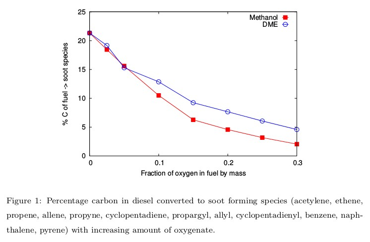

A Chemical Kinetic Modeling Study of the Effects of Oxygenated Species on Soot Emissions from Diesel Engines
The role of oxygenated hydrocarbons (methanol and DME) in reducing soot precursors from diesel engines has been studied using a detailed chemical kinetic model. Diesel has been represented by a surrogate made of n-dodecane and m-xylene, whose composition is defined to match the threshold sooting index of the real fuel. Our analysis revealed that oxygenates decreased the overall equivalence ratio of the mixture thus producing higher ignition temperatures and more radical species to consume more soot precursor species, leading to lower soot production overall. These observations were exemplified by a fundamental path flux analysis of the production and consumption routes of acetylene, which is the dominant soot precursor in this case.
Study of Auto-Ignition and Extinction Characteristics of Diesel Blended with Oxygenates in Laminar Opposed Non-Premixed Flames
Autoignition and extinction characteristics of mixtures of diesel surrogate (mixture of n-dodecane and m-xylene) and oxygenated additives (methanol and DME) have been computed. The results indicated that blending small amounts of oxygenates with diesel increases its resistance to extinction whereas, the auto-ignition characteristics were not altered much due to blending. This study suggests that in the presence of an oxygenate, a combustion system can be made more stable even at higher strain rates while operating with reduced emissions.
Experiments in a Counterflow Burner
Experiments were performed to obtain the extinction strain rates of DME/air mixtures in a counterflow burner setup at NCCRD, IIT Madras. DME being a highly flammable gas, the setup has been modified in order to obtain extinction data for DME. The strain rate at extinction has been measured as a function of the mass fraction of fuel in the fuel stream. The results obtained have been validated using detailed chemical kinetic model and found to agree well with the experimental data.
A Comprehensively Validated Compact Mechanism for Dimethyl Ether Oxidation
A compact mechanism consisting of 23 species and 89 reactions has been proposed for DME oxidation. The predictions of this 23-species mechanism agree very well with the available experimental data for ignition delay, laminar flame speeds, flow reactor and jet-stirred reactor (JSR) species profiles, and non-premixed extinction strain rates. The 23-species mechanism has been further reduced by introducing quasi-steady state assumptions for six intermediate species to obtain a 14-step global mechanism using a reduction code developed in-house. The 14-step mechanism performs as good as the 23-species mechanism for all the experimental data sets it has been tested for.